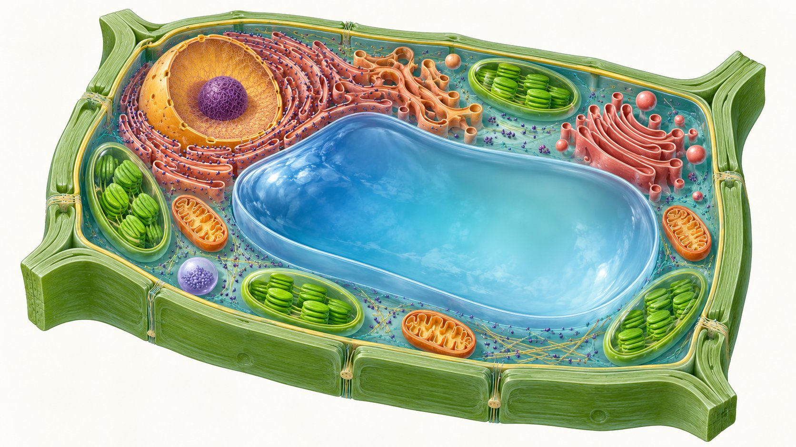
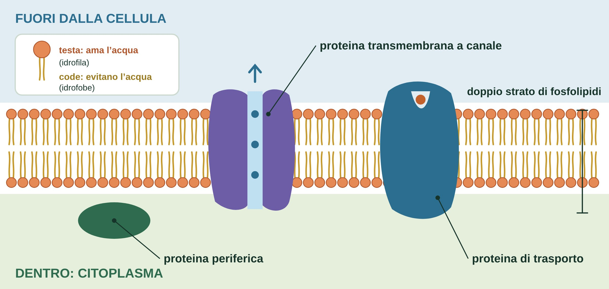
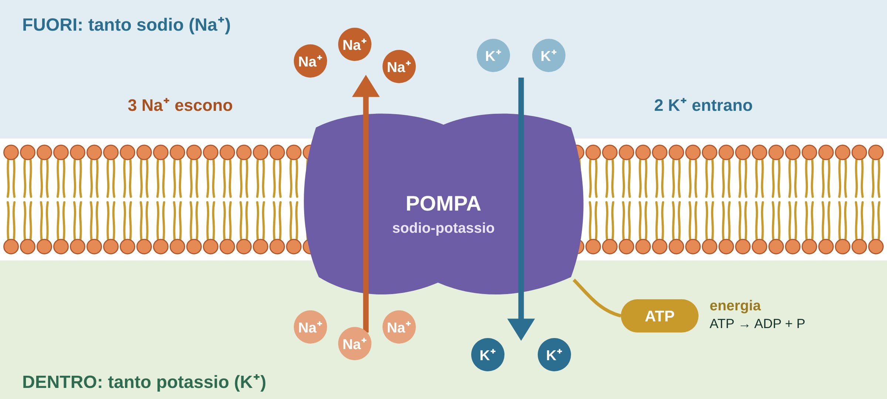
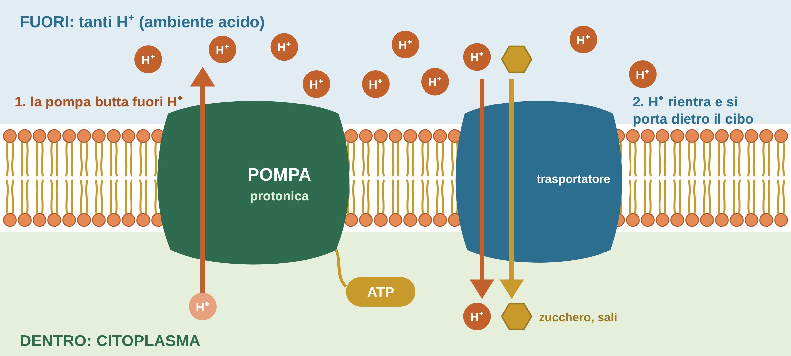
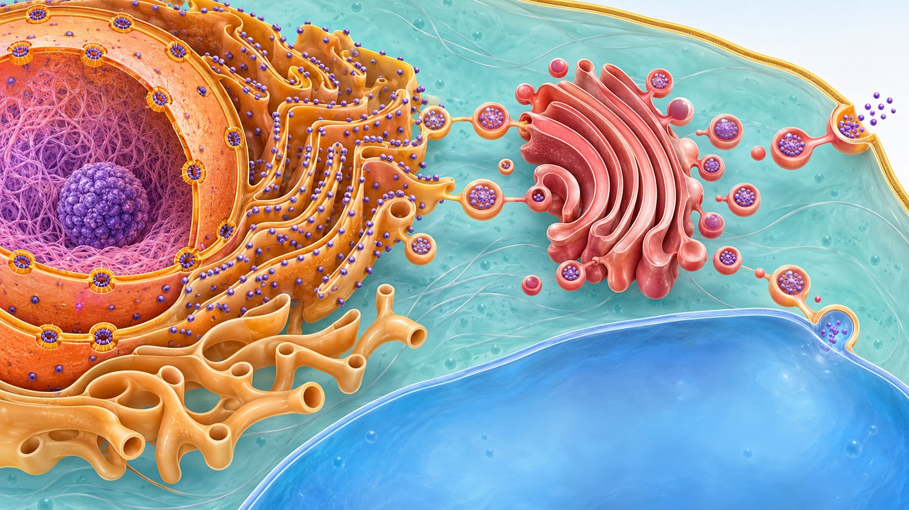
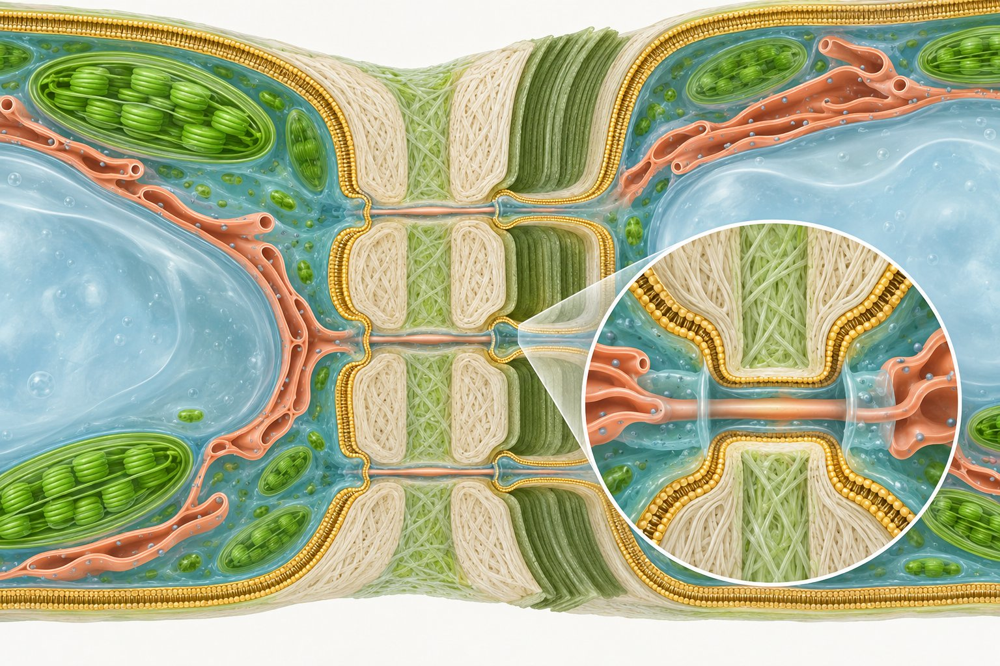
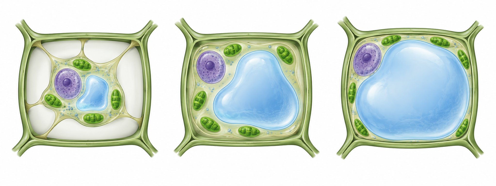
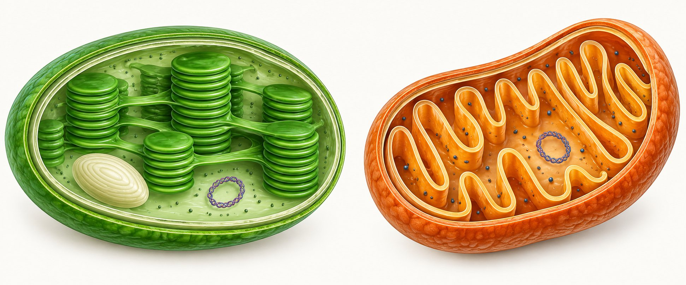

Agrobiologia · Classi prime · Percorso introduttivo
Dispensa di studio: che cos’è ogni parte della cellula e a cosa serve, spiegato in parole semplici, con i termini del libro.

Nel 1665 l’inglese Robert Hooke, guardando un sottile pezzo di sughero al microscopio, vide tante piccole “stanzette” vuote e le chiamò cell (dal latino cella, piccola stanza), in italiano cellula. In realtà vedeva gli spazi lasciati da cellule morte.
Nel 1838 il botanico Matthias Schleiden e lo zoologo Theodor Schwann formularono la teoria cellulare: tutti gli organismi viventi sono formati da cellule. La cellula è l’unità strutturale e funzionale degli esseri viventi:
| Cellula procariotica | Cellula eucariotica |
|---|---|
| Più semplice e antica. Non ha un vero nucleo: il DNA sta libero nel citoplasma. Non ha organelli con membrana. È la cellula dei batteri (Bacteria e Archaea). | Più complessa. Il DNA è chiuso in un nucleo e ci sono molti organelli avvolti da membrane. È la cellula di protozoi, alghe (Chromista), funghi, piante e animali. |
Parola chiave: organello
Un organello è una piccola struttura dentro la cellula che fa un lavoro preciso, come un organo nel nostro corpo. Quasi tutti gli organelli sono avvolti da una membrana che li separa dal resto della cellula.
La cellula vegetale è eucariotica: ha tutti gli organelli delle cellule eucariotiche e in più tre caratteristiche sue: parete cellulare, vacuolo, plastidi.
| Struttura | Che cos’è | A cosa serve |
|---|---|---|
| Parete cellulare | Involucro rigido esterno alla membrana, fatto soprattutto di cellulosa. | Sostiene, protegge, dà forma; fa passare acqua e soluti; permette il turgore. |
| Membrana plasmatica (plasmalemma) | Sottile doppio strato di fosfolipidi con proteine (anche transmembrana: canali, trasportatori, pompe). | Decide che cosa entra e che cosa esce dalla cellula. |
| Citoplasma | Liquido (citosol) con organelli, dentro la membrana. | È l’ambiente dove avvengono molte reazioni. |
| Citoscheletro | Rete di filamenti e tubuli di proteine. | Dà sostegno interno e muove organelli e vescicole. |
| Nucleo | Organello con doppia membrana e pori; contiene il DNA. | Conserva le istruzioni e comanda la cellula. |
| Nucleolo | Zona scura dentro il nucleo. | Prepara le parti dei ribosomi. |
| Ribosomi | Granuli piccolissimi, liberi o sul reticolo. | Costruiscono le proteine. |
| Reticolo endoplasmatico ruvido (rugoso) | Sacchetti di membrana coperti di ribosomi. | Produce proteine da esportare o da mettere in riserva. |
| Reticolo endoplasmatico liscio | Tubicini di membrana senza ribosomi. | Produce lipidi. |
| Apparato di Golgi | Pila di sacchetti appiattiti. | Modifica, smista e impacchetta le sostanze. |
| Vescicole | Piccole bolle di membrana. | Trasportano sostanze dentro e fuori la cellula. |
| Mitocondrio | Organello con doppia membrana ripiegata in creste. | Respirazione cellulare: ricava energia dagli zuccheri. |
| Perossisoma | Piccola vescicola con enzimi. | Elimina sostanze dannose (es. acqua ossigenata). |
| Vacuolo | Grande sacco (tonoplasto) pieno di succo vacuolare. | Riserva, digestione, turgore. |
| Plastidi (cloroplasti, leucoplasti, cromoplasti) | Organelli con doppia membrana e DNA proprio. | Fotosintesi, riserva di sostanze, colore di fiori e frutti. |
| Plasmodesmi | Ponti di citoplasma che attraversano la parete. | Collegano le cellule vicine (via simplastica). |
Il libro li dà per conosciuti (si studiano in Biologia). Qui trovi l’essenziale per capire l’Unità.
La membrana plasmatica, detta anche plasmalemma o membrana cellulare, è un velo sottilissimo formato da un doppio strato di fosfolipidi con proteine. Avvolge la cellula e controlla gli scambi: fa entrare acqua, sali e nutrienti e fa uscire gli scarti. Nella cellula vegetale si trova subito sotto la parete.
Dentro la membrana c’è il citoplasma: un liquido gelatinoso (citosol) in cui galleggiano gli organelli, sostenuti dal citoscheletro, una rete di filamenti proteici. Il libro chiama protoplasto l’insieme di citoplasma e membrana plasmatica, cioè la cellula “viva” senza la parete.

La stessa struttura forma anche le membrane degli organelli, per esempio il tonoplasto, la membrana del vacuolo (p. 158). La membrana è fatta di milioni di fosfolipidi. Ognuno ha una testa idrofila (“ama l’acqua”) e due code idrofobe (“evitano l’acqua”, come l’olio). Siccome fuori e dentro la cellula c’è acqua, i fosfolipidi si mettono in due strati: le teste guardano verso l’acqua, le code si nascondono al centro. Questo strato centrale “oleoso” è una barriera: l’acqua e le sostanze sciolte (zuccheri, sali) da sole non passano, o passano pochissimo.
Nel doppio strato sono immerse molte proteine, come tessere di un mosaico. Fosfolipidi e proteine si spostano continuamente: per questo si parla di modello a mosaico fluido.
| Tipo | Come funziona | Esempio |
|---|---|---|
| Canale | Un tunnel attraverso la membrana, sempre o a volte aperto. | Le acquaporine fanno passare l’acqua: così l’acqua arriva al vacuolo e si crea il turgore. |
| Trasportatore | Afferra una molecola da un lato, cambia forma e la lascia dall’altro (porta girevole). | Ingresso di zuccheri e sali. |
| Pompa | Spinge le sostanze dove ce ne sono già tante, usando energia (ATP). | Pompa sodio-potassio; nelle piante pompa protonica (H⁺). |
Trasporto passivo
La sostanza va da dove è più concentrata a dove lo è meno, “in discesa”, come una palla che rotola. Non serve energia. Avviene con i canali e i trasportatori. L’osmosi (il passaggio dell’acqua) è un trasporto passivo.
Trasporto attivo
La sostanza va “in salita”, verso dove ce n’è già di più. Serve energia, fornita dall’ATP. Avviene con le pompe.
Immagina una barca che imbarca acqua
L’acqua entra da sola dalle fessure: se nessuno la toglie, la barca affonda. Allora un marinaio, con un secchio, la butta fuori di continuo. Nella cellula succede la stessa cosa: il sodio (Na⁺) è l’acqua che entra da solo, la pompa è il marinaio, l’ATP è la fatica che fa.

Che cosa fa, in tre parole: fuori il sodio, dentro il potassio. A ogni giro butta fuori 3 Na⁺, fa entrare 2 K⁺ e spende 1 ATP. Non si ferma mai: fa centinaia di giri al secondo. Si chiama “pompa” perché sposta gli ioni dove ce ne sono già tanti, come una pompa che porta l’acqua in cima a un palazzo: è trasporto attivo, quindi costa energia.
| Serve a… | Spiegato semplice |
|---|---|
| 1. Tenere in ordine l’acqua | L’acqua segue i sali. Se il sodio si accumulasse dentro, entrerebbe troppa acqua: una cellula animale, che non ha la parete, si gonfierebbe fino a scoppiare. |
| 2. Caricare una “diga” | Il sodio tenuto fuori è come l’acqua dietro una diga: vuole rientrare. Quando rientra da una porta speciale si “porta dietro” zuccheri e amminoacidi. Così la cellula si nutre. |
| 3. Far partire i segnali | La differenza tra dentro e fuori è come una pila carica: i nervi la usano per mandare segnali e i muscoli per contrarsi. |
Da ricordare
Fuori il sodio, dentro il potassio, a spese di ATP. Serve a controllare l’acqua, a far entrare il nutrimento e a mandare segnali. Attenzione: è tipica delle cellule animali.

Le cellule vegetali hanno una pompa tutta loro: la pompa protonica. È una proteina transmembrana della membrana plasmatica che, spendendo ATP, butta fuori ioni idrogeno (H⁺, detti anche protoni). Fuori dalla cellula si accumulano tanti H⁺ e l’ambiente diventa più acido: è la “diga” della pianta. Gli H⁺ vogliono rientrare: possono farlo solo da trasportatori speciali, e rientrando si portano dietro zuccheri e sali.
Il trucco è lo stesso della pompa sodio-potassio: spendere energia per caricare una diga, e poi usarla per far entrare ciò che serve. Cambia solo lo ione: sodio negli animali, H⁺ nelle piante.
| Serve a… | Spiegato semplice |
|---|---|
| 1. Nutrire la cellula | Zuccheri come il saccarosio e sali minerali come i nitrati entrano insieme agli H⁺. Così, per esempio, il saccarosio prodotto dalla fotosintesi viene caricato nel floema o libro. |
| 2. Riempire il vacuolo | Pompe protoniche si trovano anche sul tonoplasto, la membrana che avvolge il vacuolo, e spingono H⁺ dentro il vacuolo. Così il vacuolo riesce ad accumulare sali, zuccheri e acidi, che richiamano acqua: è il turgore cellulare. |
| 3. Aprire gli stomi | Le due cellule che circondano lo stoma, grazie alla pompa, fanno entrare potassio; poi entra acqua, si gonfiano e lo stoma si apre. Così entra la CO₂ per la fotosintesi (gli stomi si osservano nell’Attività pratica 4). |
| 4. Far crescere la cellula | Gli H⁺ buttati fuori rendono acida la parete, che si ammorbidisce. Il vacuolo spinge e la cellula si allunga. |
| Pompa sodio-potassio | Pompa protonica | |
|---|---|---|
| Dove | cellule animali | cellule vegetali (e funghi) |
| Che cosa sposta | 3 Na⁺ fuori, 2 K⁺ dentro | H⁺ fuori (o dentro il vacuolo) |
| Energia | ATP | ATP |
| A cosa serve | controllo dell’acqua, ingresso del nutrimento, segnali nervosi | ingresso del nutrimento, turgore, apertura degli stomi, crescita |
Da ricordare
La pompa protonica è la pompa delle piante: con l’ATP butta fuori H⁺; gli H⁺ rientrando portano dentro zuccheri e sali. Senza pompe niente nutrimento, niente turgore, niente stomi aperti.
Il nucleo è l’organello più grande dopo il vacuolo. È avvolto da una doppia membrana (involucro nucleare) con pori da cui passano le molecole. Contiene il DNA, cioè le istruzioni per costruire e far funzionare la cellula: per questo è il “centro di comando”. Il nucleolo è una zona interna in cui si preparano le parti dei ribosomi.
I ribosomi sono granuli piccolissimi che costruiscono le proteine, unendo gli amminoacidi secondo le istruzioni del DNA. Possono essere liberi nel citoplasma o attaccati al reticolo endoplasmatico.

Alcuni organelli lavorano come una catena di montaggio collegata da vescicole. Il libro li chiama sistema di endomembrane e ci mette dentro anche il vacuolo (p. 159):
Esempio dal libro
Le proteine di riserva prodotte dal reticolo endoplasmatico rugoso possono arrivare direttamente al vacuolo oppure passare dall’apparato di Golgi, dove vengono ulteriormente modificate.
I mitocondri hanno due membrane: quella interna è piegata in creste. Fanno la respirazione cellulare: usano ossigeno per “bruciare” gli zuccheri e ottenere l’energia che serve alla cellula. Anche le cellule vegetali respirano, giorno e notte. Come i plastidi, hanno DNA circolare e ribosomi propri.
I perossisomi sono piccole vescicole con enzimi che eliminano sostanze dannose, come l’acqua ossigenata.
Viridis, paragrafo 1.1, pp. 157-158
La parete cellulare esiste nei procarioti, nei funghi, nelle alghe e nelle piante. Nelle piante è una struttura esterna alla membrana cellulare che svolge più funzioni: sostegno, protezione, trasporto di acqua e soluti. Dà alla cellula una forma definita ed è responsabile del turgore cellulare.

La parete primaria è la prima parete costruita dalla cellula, all’esterno del plasmalemma. È formata da:
In alcune cellule specializzate (legno o xilema, sughero), quando la cellula ha finito di crescere si forma verso l’interno (in direzione centripeta) un secondo strato: la parete secondaria. Contiene molte microfibrille di cellulosa e meno emicellulose e pectine, e riduce lo spazio del protoplasto.
Il paragone del calcestruzzo armato
La cellulosa è come i tondini di ferro: resiste alla trazione e permette al legno di piegarsi. La lignina è come il calcestruzzo: dà rigidità e resistenza alla compressione.
Tra le pareti di due cellule vicine c’è uno strato di pectina chiamato lamella mediana, che fa aderire le cellule tra loro. Se le pectine vengono digerite dagli enzimi di funghi patogeni o per l’eccessiva maturazione di un frutto, le cellule si staccano e il tessuto si spappola. Le pectine sono molto idrofile e gelificanti: per questo si usano per gelatine e marmellate.
Nonostante la parete, le cellule vegetali comunicano facilmente. I plasmodesmi sono ponti di citoplasma in comune tra due cellule vicine, che passano attraverso fori della parete chiamati punteggiature. Dentro ogni plasmodesma corre un sottile tubulo di reticolo endoplasmatico, il desmotubulo, che collega il reticolo di una cellula con quello della vicina.
| Via | Dove passa | Che cosa vuol dire |
|---|---|---|
| Via simplastica | Dentro le cellule, attraverso i plasmodesmi. | Acqua e soluti vanno da un citoplasma all’altro. |
| Via apoplastica | Nelle pareti cellulari primarie, impregnate d’acqua (e nei vasi dello xilema). | Acqua, soluti e gas si muovono “fuori” dai protoplasti. L’insieme delle pareti è l’apoplasto. |
Viridis, paragrafo 1.2, pp. 158-159
Il vacuolo è un organello delimitato da una membrana chiamata tonoplasto (doppio strato di fosfolipidi con proteine). Dentro c’è il succo vacuolare: acqua con molte sostanze disciolte e a volte cristalli. Il nome viene dal latino vacuum, “vuoto”, perché i primi osservatori, nell’Ottocento, pensavano che fosse vuoto. Nelle cellule adulte del parenchima clorofilliano i vacuoli si fondono in un unico grande vacuolo che può occupare fino al 90% del volume della cellula.
Il vacuolo ha tre funzioni:
| Sostanza | Esempi dal libro |
|---|---|
| Zuccheri | glucosio, fruttosio, saccarosio, inulina |
| Amminoacidi e proteine | granuli di aleurone dei cereali |
| Acidi organici | acido citrico (agrumi), acido malico (mele), acido ossalico |
| Lipidi | oli |
| Cationi | K⁺, Na⁺, Ca²⁺, Mg²⁺ |
| Cristalli di ossalato di calcio | ad aghi (rafidi) o a prismi (druse) |
| Pigmenti | i rossi e blu di molti fiori e frutti |
| Alcaloidi | caffeina, teina, morfina, colchicina |
| Tannini | difesa contro patogeni e fitofagi |
| Oli essenziali e resine | usati dall’industria dei profumi |
Alcuni vacuoli digeriscono, come i lisosomi della cellula animale: aiutano a difendersi dai patogeni e a riciclare gli organelli invecchiati.

Le sostanze sciolte nel succo vacuolare richiamano acqua dal citoplasma, dalla parete e dagli spazi tra le cellule. Il vacuolo si gonfia e spinge sulla parete (pressione idrostatica); la parete, con la sua rete di cellulosa, resiste. Questo equilibrio si chiama turgore cellulare ed è ciò che tiene rigidi i fusti erbacei e le foglie.
Appassimento
Perdita di turgore (per esempio per stress idrico): le foglie si afflosciano. È reversibile: se la pianta riceve acqua, si riprende.
Avvizzimento
Morte o necrosi delle cellule. È irreversibile: non si torna indietro.
Se mettiamo una cellula in una soluzione molto concentrata (per esempio acqua salata), il vacuolo perde acqua e il protoplasto si stacca dalla parete: è la plasmolisi, che si osserva nell’Attività pratica 1 del libro (“Turgore e plasmolisi nella cellula vegetale”).
Viridis, paragrafo 1.3, pp. 159-161
I plastidi sono organelli esclusivi della cellula vegetale. Come i mitocondri hanno una doppia membrana e al loro interno ribosomi simili a quelli dei procarioti e DNA a molecola circolare. Si dividono in tre tipi in base al colore e al contenuto:
| Tipo | Colore | A cosa serve |
|---|---|---|
| Leucoplasti | incolori | accumulano sostanze di riserva |
| Cloroplasti | verdi (clorofilla) | fanno la fotosintesi |
| Cromoplasti | gialli, rossi, arancioni (carotenoidi) | colorano fiori e frutti per attirare animali |
Tutti derivano dai proplastidi, plastidi indifferenziati presenti nei tessuti meristematici.

Sono verdi per la clorofilla, il pigmento della fotosintesi clorofilliana. Dentro ci sono:
Fase luminosa – sulla membrana dei tilacoidi
La clorofilla e altri pigmenti “antenna” formano due fotosistemi (I e II). La luce fa muovere elettroni dal fotosistema II al fotosistema I. Il fotosistema II recupera elettroni rompendo l’acqua (H₂O): così si libera ossigeno (O₂), un gas di scarto che però ha permesso la vita aerobica sulla Terra. L’energia della luce diventa energia chimica.
Ciclo di Calvin – nello stroma
Con quell’energia la CO₂ viene “organicata”: entra in uno zucchero a tre atomi di carbonio, la gliceraldeide-3-fosfato. Da qui si producono gli zuccheri e l’amido primario, che resta nel cloroplasto perché insolubile.
Il viaggio dello zucchero: di notte l’amido primario diventa in parte glucosio (usato dalla cellula) e in parte saccarosio (glucosio + fruttosio). Il saccarosio viaggia nel floema o libro fino agli organi di riserva (radici, fusti, tuberi, bulbi, rizomi, semi, frutti), dove diventa amido secondario negli amiloplasti.
luce + H₂O + CO₂ → amido primario (cloroplasto) → saccarosio (floema) → amido secondario (amiloplasto)
Sono gialli, rossi e arancioni perché producono e accumulano carotenoidi. Si trovano in molti fiori e frutti per attirare gli insetti pronubi (impollinatori) e gli animali che spargono i semi. Possono derivare da proplastidi, leucoplasti o cloroplasti: nel pomodoro che matura, i cloroplasti si trasformano in cromoplasti e la buccia passa dal verde al rosso.
| Solo nella vegetale | In entrambe | Tipico dell’animale |
|---|---|---|
| parete cellulare, plasmodesmi, plastidi, un grande vacuolo centrale, forma regolare e fissa | membrana plasmatica, citoplasma, citoscheletro, nucleo e nucleolo, ribosomi, reticolo endoplasmatico, apparato di Golgi, mitocondri, perossisomi | centrioli, lisosomi (nella vegetale li sostituiscono i vacuoli litici), vacuoli piccoli, forma variabile |
| Cloroplasto | Mitocondrio | |
|---|---|---|
| Dove si trova | solo nelle cellule vegetali verdi | in quasi tutte le cellule eucariotiche |
| Membrane | doppia + tilacoidi interni | doppia, l’interna forma creste |
| Che cosa fa | fotosintesi: produce zuccheri e libera O₂ | respirazione: consuma zuccheri e O₂ per dare energia |
| In comune | DNA circolare e ribosomi propri | DNA circolare e ribosomi propri |
cellula → tessuto → organo → organismo. Più cellule simili formano un tessuto; più tessuti formano gli organi, che nelle piante sono tre: fusto, radice, foglia (p. 161). È l’argomento della lezione successiva.
| Termine | Significato in parole semplici |
|---|---|
| acquaporine | proteine canale che fanno passare l’acqua |
| amido primario | amido prodotto dalla fotosintesi e depositato nel cloroplasto |
| amido secondario | amido di riserva negli amiloplasti degli organi di riserva |
| amiloplasti | leucoplasti che accumulano amido secondario |
| apoplasto / via apoplastica | insieme delle pareti cellulari; trasporto attraverso le pareti |
| appassimento | afflosciamento per perdita di turgore, reversibile |
| ATP | molecola che fornisce energia alla cellula |
| avvizzimento | morte (necrosi) delle cellule, irreversibile |
| carotenoidi | pigmenti gialli, arancioni, rossi dei cromoplasti |
| ciclo di Calvin | fase della fotosintesi nello stroma in cui la CO₂ diventa zucchero |
| clorofilla | pigmento verde che cattura la luce |
| cromoplasti | plastidi colorati di fiori e frutti |
| desmotubulo | tubulo di reticolo endoplasmatico dentro il plasmodesma |
| elaioplasti | leucoplasti che accumulano grassi |
| emicellulose | polisaccaridi della parete legati alla cellulosa |
| floema o libro | tessuto che trasporta il saccarosio |
| fosfolipidi | molecole con testa idrofila e code idrofobe che formano le membrane |
| fotosistemi I e II | gruppi di pigmenti sui tilacoidi che catturano la luce |
| gliceraldeide-3-fosfato | zucchero a tre atomi di carbonio prodotto nel ciclo di Calvin |
| granum (pl. grana) | pila di tilacoidi |
| lamella mediana | strato di pectina che incolla le pareti di cellule vicine |
| leucoplasti | plastidi incolori di riserva |
| lignina | sostanza che rende la parete rigida e impermeabile (legno) |
| microfibrille di cellulosa | fili di cellulosa che formano l’ossatura della parete |
| parete primaria / secondaria | prima parete costruita / strato aggiunto verso l’interno dopo la crescita |
| pectine o sostanze pectiche | polimeri di zuccheri gelificanti della parete e della lamella mediana |
| plasmalemma | membrana plasmatica |
| plasmodesmi | ponti di citoplasma tra cellule vicine |
| plasmolisi | distacco del protoplasto dalla parete per perdita d’acqua |
| pompa protonica | pompa delle cellule vegetali che con l’ATP butta fuori ioni H⁺ |
| pompa sodio-potassio | proteina transmembrana che porta fuori 3 Na⁺ e dentro 2 K⁺ usando ATP |
| proplastidi | plastidi non ancora specializzati dei meristemi |
| proteina transmembrana | proteina che attraversa tutto il doppio strato della membrana |
| proteinoplasti | leucoplasti che accumulano proteine |
| protoplasto | citoplasma + membrana plasmatica (la cellula senza parete) |
| punteggiature | fori della parete attraversati dai plasmodesmi |
| stroma | matrice liquida del cloroplasto |
| suberina | sostanza impermeabile della parete del sughero |
| succo vacuolare | soluzione contenuta nel vacuolo |
| tilacoidi (intergranali o stromatici) | cisterne del cloroplasto; quelli intergranali collegano i grana |
| tonoplasto | membrana del vacuolo |
| trasporto attivo / passivo | passaggio di sostanze con spesa di energia (“in salita”) / senza energia (“in discesa”) |
| turgore cellulare | equilibrio tra vacuolo che spinge e parete che resiste |
| via simplastica | passaggio di acqua e soluti da cellula a cellula tramite i plasmodesmi |
Soluzioni
A: 1 V; 2 F (è esterna); 3 V; 4 V; 5 F (è il contrario); 6 V; 7 F (avviene nello stroma); 8 V; 9 F (usa 1 ATP: è trasporto attivo); 10 V; 11 V.
B: 1-b; 2-e; 3-f; 4-d; 5-a; 6-c.
C: 1 tonoplasto, succo vacuolare; 2 cellulosa, pectine; 3 lignina, suberina; 4 granum, stroma; 5 floema, libro.
D: 1 il vacuolo perde acqua e non spinge più sulla parete: perdita di turgore, appassimento; con l’acqua il turgore torna (è reversibile). 2 simplastica = da citoplasma a citoplasma attraverso i plasmodesmi; apoplastica = attraverso le pareti impregnate d’acqua. 3 fotosintesi nel cloroplasto → amido primario → di notte saccarosio → floema → tubero → amido secondario negli amiloplasti. 4 passivo = “in discesa”, senza energia (acqua nelle acquaporine); attivo = “in salita”, con ATP (pompa sodio-potassio o pompa protonica). 5 la pompa butta fuori H⁺ con l’ATP; gli H⁺ rientrando portano dentro zuccheri e sali (nutrimento); i sali accumulati nel vacuolo richiamano acqua e danno il turgore (la pianta sta dritta).
Altre domande: Viridis, verifiche di fine Unità, p. 169.